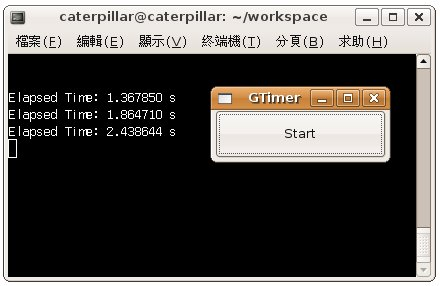

GTimer是個計時器，當您需要量測兩個執行時間點的間隔時就可以使用，例如程式執行的開始與結束時間，您可以使用g_timer_new()建立一個新的GTimer，若不再需要時則使用g_timer_destroy()加以毀棄。
在g_timer_new()之後，會自動標示啟動時間，您也可以使用g_timer_start()再度標示啟動時間，並於g_timer_elapsed()被呼叫時，傳回自啟動後的時間。
若使用g_timer_start()標示啟動時間，並使用g_timer_end()標示結束時間，則於g_timer_elapsed()被呼叫時，將傳回啟動後時間與結束時間的間隔，在使用g_timer_end()標示結束時間之後，您可以使用g_timer_continue()重新繼續GTimer的計時。
下面這個程式是個簡單的示範，可以計算兩次按鈕之間的時間間隔：
#include <gtk/gtk.h>
void button_pressed(GtkButton *button, GTimer *timer) {
static gdouble elapsedTime;
static gboolean isRunning = FALSE;
if(isRunning) {
elapsedTime = g_timer_elapsed(timer, NULL);
gtk_button_set_label(button, "Start");
g_print("Elapsed Time: %f s\n", elapsedTime);
}
else {
g_timer_start(timer);
gtk_button_set_label(button, "Stop");
}
isRunning = !isRunning;
}
int main(int argc, char *argv[]) {
GtkWidget *window;
GtkWidget *button;
GTimer *timer;
gtk_init(&argc, &argv);
window = gtk_window_new(GTK_WINDOW_TOPLEVEL);
gtk_window_set_title(GTK_WINDOW(window), "GTimer");
gtk_window_set_default_size(GTK_WINDOW(window), 150, 50);
button = gtk_button_new_with_label("Start");
gtk_container_add(GTK_CONTAINER(window), button);
timer = g_timer_new();
g_signal_connect(GTK_OBJECT(button), "clicked",
G_CALLBACK(button_pressed), timer);
g_signal_connect(GTK_OBJECT(window), "destroy",
G_CALLBACK(gtk_main_quit), NULL);
gtk_widget_show_all(window);
gtk_main();
return 0;
}
一個執行的結果畫面如下所示：

|
|